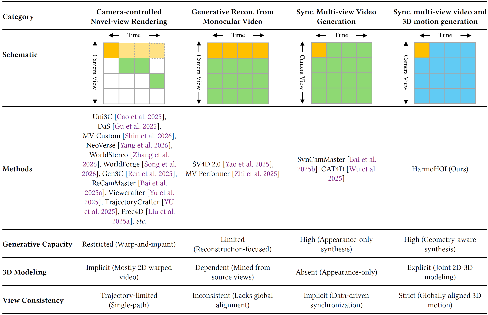
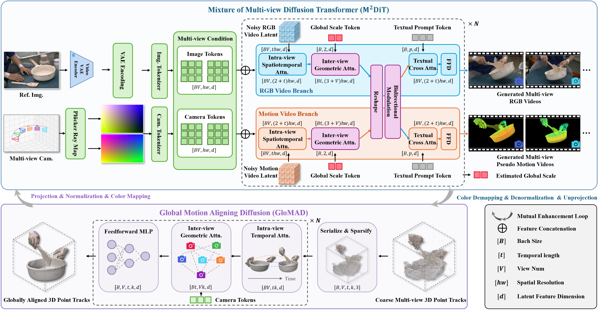
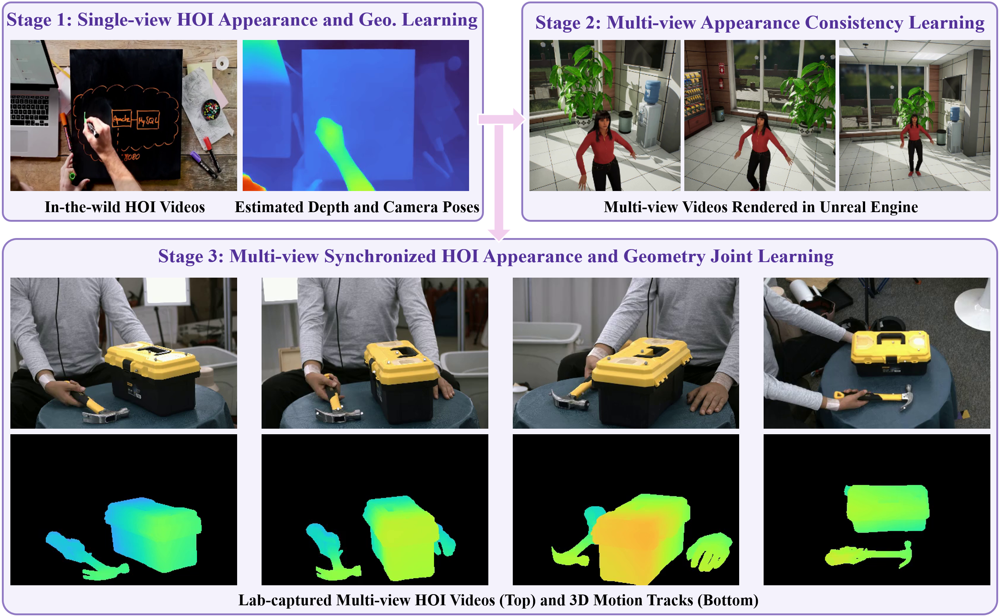

Hand-Object Interaction (HOI) synthesis is a cornerstone for animation production and embodied AI. Despite the strong priors of video foundation models, multi-view consistent HOI synthesis remains challenging due to complex hand motions and occlusions. We present HarmoHOI, a unified diffusion framework that jointly and harmoniously generates synchronized multi-view HOI videos and globally aligned 3D point tracks. Our core insight is that robust multi-view consistency fundamentally requires globally aligned 3D geometry and motion. To this end, we propose a Mixture of Multi-view Diffusion Transformer that co-models RGB videos and 3D point tracks. By representing point tracks as pseudo-videos, we align 3D geometric signals with the 2D latent space of foundation models, thereby minimizing the domain gap and easing adaptation of priors. To further ensure geometry consistency, we introduce Global Motion Aligning Diffusion, which refines coarse point tracks into metric-scale, globally aligned 3D trajectories. HarmoHOI enables on-the-fly co-evolution of 2D appearance and 3D motion during denoising. To overcome the scarcity of multi-view HOI data, we employ a hybrid data curriculum learning strategy that successfully transfers generic priors from single-view data to synchronized multi-view generation. Experimental results show that HarmoHOI achieves state-of-the-art performance in visual quality, motion plausibility, and multi-view geometric consistency.
Video foundation models such as Seedance 2.0 and WAN 2.7 provide strong visual priors for hand–object interaction (HOI) synthesis. In practice, however, directly applying them to HOI still falls short: they often produce hallucinated contacts, poor instruction adherence, geometric distortion, and unrealistic floating motions. More critically, most remain single-view generators and lack explicit, globally aligned 3D geometry–motion awareness, which limits synchronized multi-view consistency under heavy occlusion.
Prompt: “A person is arranging pieces of wood to form a frame-like structure on a wooden workbench.”

Comparison of novel-view / multi-view video synthesis methods. Existing paradigms either generate views sequentially or lack joint 3D motion modeling. Our core insight: robust synchronized multi-view consistency requires globally aligned 3D geometry & motion awareness.
HarmoHOI addresses these failure modes by jointly diffusing multi-view RGB videos and globally aligned 3D point tracks, enabling appearance and geometry to co-evolve during denoising.

HarmoHOI is the first synchronized multi-view joint diffusion framework for HOI video and motion synthesis. It integrates a Mixture of Multi-view DiT for joint appearance–motion modeling with Global Motion Aligning Diffusion for 3D trajectory refinement, forming a mutual enhancement loop. A hybrid data and progressive curriculum learning strategy transfers single-view priors to multi-view generation.

Hybrid-data progressive curriculum learning. HarmoHOI is trained in three stages of increasing geometric fidelity and multi-view consistency: (1) in-the-wild single-view HOI videos with estimated depth for appearance–geometry correspondence; (2) multi-view videos rendered in Unreal Engine for cross-view appearance consistency; (3) lab-captured multi-view HOI videos with 3D motion tracks for joint appearance–geometry learning. This curriculum preserves pretrained video priors while progressively injecting multi-view geometric awareness.
Synchronized multi-view HOI videos with jointly generated 3D motion.
Generalization to unseen object–tool combinations.
Joint appearance and geometry on diverse in-the-wild single-view HOI videos.
Multi-view consistent generation from in-the-wild prompts.
Close-up of hands in a green apron slicing red chilies on a dark wooden board.
A person making dumplings, right hand holding a spoon, lightly tapping the filling on the left palm.
A person rolling dough on a board, pushing and pulling a rolling pin back and forth.
A person slicing green zucchini on a cutting board with a kitchen knife.
Asian woman walking barefoot on a sun-drenched tropical beach, photorealistic side-tracking shot.
Each case is a 4×6 grid: rows are methods (DaS / SynCamMaster / SV4D 2.0 / Ours); columns are Source View and View 2–6.
Comparison against Geo4D, Depth Anything 3, and GeoCrafter.
@misc{dang2026harmohoiharmonizingappearance3d,
title={HarmoHOI: Harmonizing Appearance and 3D Motion for Multi-view Hand-Object Interaction Synthesis},
author={Lingwei Dang and Juntong Li and Zonghan Li and Hongwen Zhang and Liang An and Wei Min and Yebin Liu and Qingyao Wu},
year={2026},
eprint={2607.17097},
archivePrefix={arXiv},
primaryClass={cs.CV},
url={https://arxiv.org/abs/2607.17097},
}